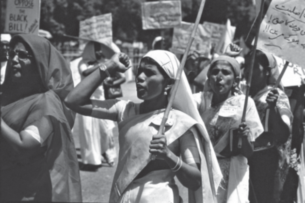
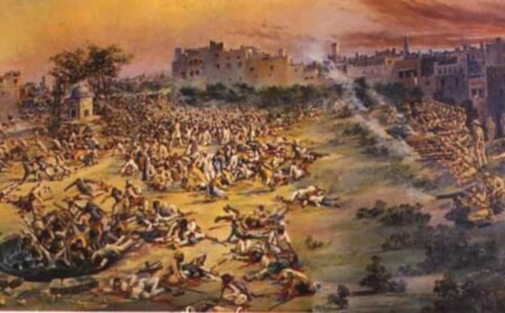
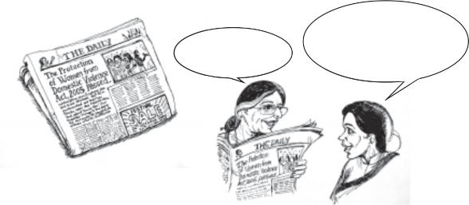
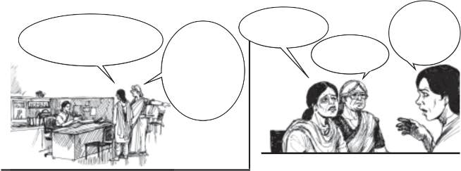
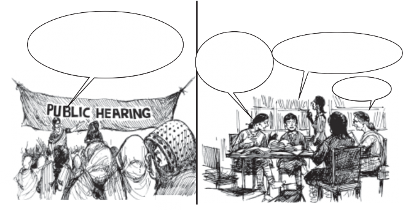
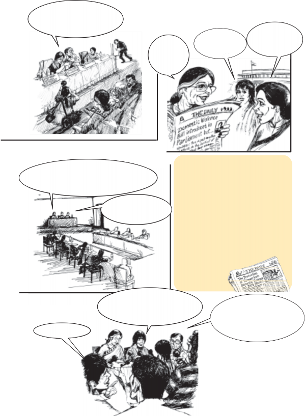
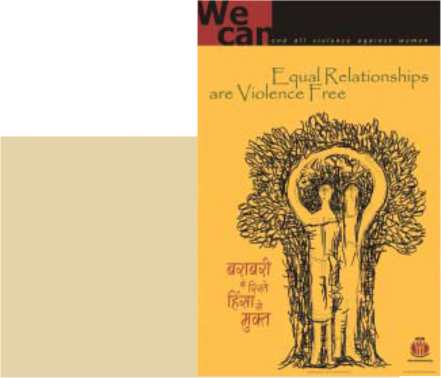
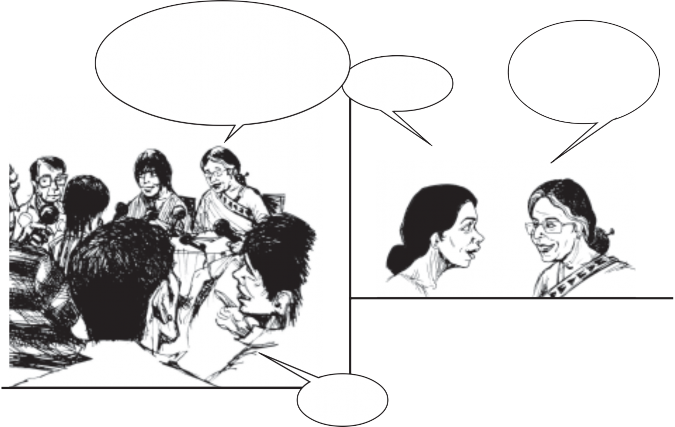

Chapter 4 | Understanding Laws | |
You may be familiar with some laws such as those that specify the age of marriage, the age at which a person can vote, and perhaps even the laws dealing with buying and selling of property. We now know that the Parliament is in charge of making laws. Do these laws apply to everyone? How do new laws come into being? Could there be laws that are unpopular or controversial? What should we as citizens do under such circumstances? | ||
Social and Political Life 42

Understanding Laws
Read the following situation and answer the questions
that follow. Q
A government official helps his son go into hiding because
his son has been given a ten-year jail sentence by a District Court for a crime that he has committed.
Do you think that the government official’s actions were right? Should his son be exempt from the law just because his father is economically and politically powerful?
The above is a clear case of the violation of law. As you read in Unit 1, members of the Constituent Assembly were agreed there should be no arbitrary exercise of power in independent India. They, therefore, instituted several provisions in the Constitution that would establish the rule of law. The most important of these was that all persons in independent India are equal before the law.
The law cannot discriminate between persons on the basis of their religion, caste or gender. What the rule of law means is that all laws apply equally to all citizens of the country and no one can be above the law. Neither a government official, nor a wealthy person nor even the President of the country is above the law. Any crime or violation of law has a specific punishment as well as a process through which the guilt of the person has to be established. But was it always like this?
In ancient India, there were innumerable and often overlapping local laws. Different communities enjoyed different degrees of autonomy in administering these laws
Another example of British arbitrariness was the Rowlatt Act which allowed the British government to imprison people without due trial. Indian nationalists including Mahatma Gandhi were vehement in their opposition to the Rowlatt bills. Despite the large number of protests, the Rowlatt Act came into effect on 10 March 1919. In Punjab, protests against this Act continued quite actively and on April 10 two leaders of the movement, Dr Satyapal and Dr Saifuddin Kitchlew were arrested. To protest these arrests, a public meeting was held on 13 April at Jallianwala Bagh in Amritsar. General Dyer entered the park with his troops. They closed the only exit and without giving any warning General Dyer ordered the troops to fire. Several hundreds of people died in this gunfire and many more were wounded including women and children. This painting shows troops firing on the people during the Jallianwala Bagh massacre.
among their own. In some cases, the punishment that two persons received for the same crime varied depending on their caste backgrounds, with lower castes being more harshly penalised. This slowly began to change as this system of law began to further evolve during the colonial period.
It is often believed that it was the British colonialists who introduced the rule of law in India. Historians have disputed this claim on several grounds, two of which include: first that colonial law was arbitrary, and second that the Indian nationalists played a prominent role in the development of the legal sphere in British India. One example of the arbitrariness that continued to exist as part of British law is the Sedition Act of 1870. The idea of sedition was very broadly understood within this Act. Any person protesting or criticising the British government could be arrested without due trial.
Indian nationalists began protesting and criticising this arbitrary use of authority by the British. They also began fighting for greater equality and wanted to change the idea

of law from a set of rules that they were forced to obey, to law as including ideas of justice. By the end of the nineteenth century, the Indian legal profession also began emerging and demanded respect in colonial courts. They began to use law to defend the legal rights of Indians. Indian judges also began to play a greater role in making decisions. Therefore, there were several ways in which Indians played a major role in the evolution of the rule of law during the colonial period.
With the adoption of the Constitution, this document served as the foundation on which our representatives began making laws for the country. Every year our representatives pass several new laws as well as revise existing ones. In your Class VI book, you read about the Hindu Succession Amendment Act 2005. According to this new law, sons, daughters and their mothers can get an equal share of family property. Similarly, new laws have been enacted to control pollution and provide employment. How do people come to think and propose that a new law is necessary? You will read more about this in the next section.
The Parliament has an important role in making laws. There are many ways through which this takes place and it is often different groups in society that raise the need for a particular law. An important role of Parliament is to be sensitive to the problems faced by people. Let us read the following story to understand how the issue of domestic violence was brought to the attention of the Parliament and the process adopted for this issue to become law.

Domestic violence refers to the injury or harm or threat of injury or harm caused by an adult male, usually the husband, against his wife. Injury may be caused by physically beating up the woman or by emotionally abusing her. Abuse of the woman can also include verbal, sexual and economic abuse. The Protection of Women from Domestic Violence Act 2005 extends the understanding of the term ‘domestic’ to include all women who ‘live or have lived together in a shared household’ with the male member who is perpetrating the violence.

October 2006
Shazia, did you read today’s newspapers? Isn’t it a great day for women?
Not just women. Violence-free homes will benefit everyone. Kusum, it’s taken such a long time to get this law passed. In fact, it began with establishing the need for a new law.
Kusum and Shazia work for a women's organisation. They remember the journey of how the Protection of Women from Domestic Violence Act got passed.

April 1991: A typical day at their office...
I need advice. My husband beats me
I do not want to go to the police. I just want
Unfortunately the existing law
up. I haven’t told anyone so far. I feel so ashamed. I can’t go on like this anymore. But I have nowhere to go.
I am being
ill-treated by my
son and daughter- in-law. They verbally abuse me. I have no access to my bank accounts. They may even throw me out.
to stop the violence.
I just don’t want to be thrown out of the house I am living in.
is a criminal one
and does not offer
these options.

Throughout the 1990s, the need for a new law was raised in different forums.
We’ve heard testimonies of several women. We’ve seen that women want protection
In 1999, Lawyers Collective, a group of lawyers, law students and activists, after nation-wide consultations took the lead in drafting the Domestic Violence (Prevention and Protection) Bill. This draft bill was widely circulated.
against being beaten, the right to continue living in a shared household and often temporary relief. We need a new civil law to address this issue.
The definition of domestic violence should include physical, economic, sexual and verbal and emotional abuse.
The law should cover any women
living within a shared domestic space.
They should be protected from being evicted from the shared household.
What about some monetary relief?

Meetings were held with different organisations.
The women’s movement want a new law on Domestic Violence. The Government should introduce it in parliament soon.
Finally, the Bill was introduced in Parliament in 2002 but …
Let’s have a press
This Bill has none of what we have been suggesting.
We must oppose the Bill in its present form.
conference … we could also start an on-line petition.
Several women’s organisations, National Commission for Women made submissions to the Parliamentary Standing Committee.
Esteemed members of the Parliamentary Standing Committee... the present Bill must be changed. We do not agree with the definition of domestic violence being proposed …
The law needs to provide for temporary custody of children …
In December 2002, the Standing Committee submitted its recommendations to the Rajya Sabha and these were also tabled in the Lok Sabha. The Committee’s report accepted most of the demands of the women’s groups. Finally a new bill, was reintroduced in Parliament in 2005. After being passed in both houses of Parliament, it was sent to the President for his assent. The Protection of Women from Domestic Violence Act came into effect in 2006.
At a press conference in October 2006
What is this new law?
This law is a first in recognising a woman’s right to a violence-free home and provides a comprehensive definition of domestic violence.
This is a civil law aimed at providing relief to millions of women, including wives, mothers, daughters and sisters affected by violence in their homes.
The press conference continues...
This law is a very significant step because it recognises ... The right of women to live in a shared household... women can get a protection order against any further violence... Women can get monetary relief to meet their expenses including medical costs.
Now begins another long journey …
Yes, now the government has to ensure that this law is implemented and enforced.
Why is this an important law?


Often women who face violence or are abused are seen as victims. But women struggle in several different ways to survive these situations. Therefore, it is more accurate to refer to them as survivors rather than as victims.
As the above example shows, the role of citizens is crucial in helping Parliament frame different concerns that people might have into laws. From establishing the need for a new law to its being passed, at every stage of the process the voice of the citizen is a crucial element. This voice can be heard through TV reports, newspaper editorials, radio broadcasts, local meetings - all of which help in making the work that Parliament does more accessible and transparent to the people.
Let us now look at the situation where the Parliament passes laws that turn out to be very unpopular. Sometimes a law can be constitutionally valid and hence legal, but it can continue to be unpopular and unacceptable to people because they feel that the intention behind it is unfair and harmful. Hence, people might criticise this law, hold public meetings, write about it in newspapers, report to TV news channels etc. In a democracy like ours, citizens can express their unwillingness to accept repressive laws framed by the Parliament. When a large number of people begin to feel that a wrong law has been passed, then there is pressure on the Parliament to change this.
For example, various municipal laws on the use of space within municipal limits often make hawking and street vending illegal. No one will dispute the necessity for some rules to keep the public space open so that people can walk on the pavements easily. However, one also cannot deny that hawkers and vendors provide essential services cheaply and efficiently to the millions living in a large city. This is their means of livelihood. Hence, if the law favours one group and disregards the other it will be controversial and lead to conflict. People who think that the law is not fair can approach the court to decide on the issue. The court has the power to modify or cancel laws if it finds that they don’t adhere to the Constitution.
As you read in the earlier section on the rule of law, Indian nationalists protested and criticised arbitrary and
repressive laws being enforced by the British. History provides us with several examples of people and communities who have struggled to end unjust laws. In your Class VII book, you read of how Rosa Parks, an African-American woman, refused to give up her seat on a bus to a white man on 1 December 1955. She was protesting the law on segregation that divided up all public spaces, including the streets, between the whites and the African-Americans. Her refusal was a key event that marked the start of the Civil Rights Movement, which led to the Civil Rights Act in 1964, which prohibited discrimination on the basis of race, religion or national origin in the U.S.A.
Do you remember the photo essay on the women’s movement in the Class VII book? The photos there showed the different ways in which citizens can protest, campaign and show solidarity. The following pictures point to other ways in which people protest unjust laws:
We need to remember that our role as citizens does not end with electing our representatives. Rather, it is then that we begin to use newspapers and the media to carefully chart the work that is being done by our MPs and criticise their actions when we feel it is required. Thus, what we should bear in mind is that it is the extent, involvement and enthusiasm of the people that helps Parliament perform its representative functions properly.
Exercises
Write in your own words what you understand by the term the ‘rule of law’. In your response include a fictitious or real example of a violation of the rule of law.
State two reasons why historians refute the claim that the British introduced the rule of law in India.
Re-read the storyboard on how a new law on domestic violence got passed. Describe in your own words the different ways in which women’s groups worked to make this happen.
Write in your own words what you understand by the following sentence on page 44-45: They also began fighting for greater equality and wanted to change the idea of law from a set of rules that they were forced to obey, to law as including ideas of justice.
GLOSSARY